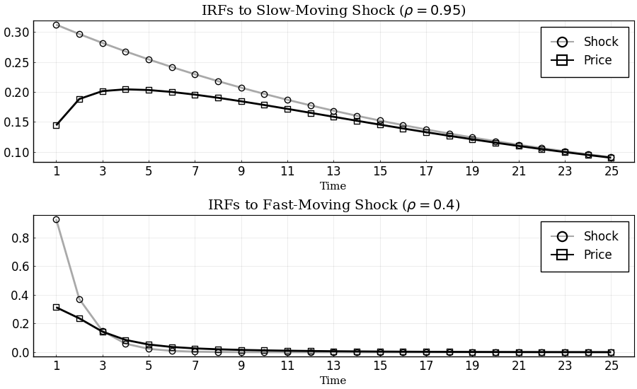
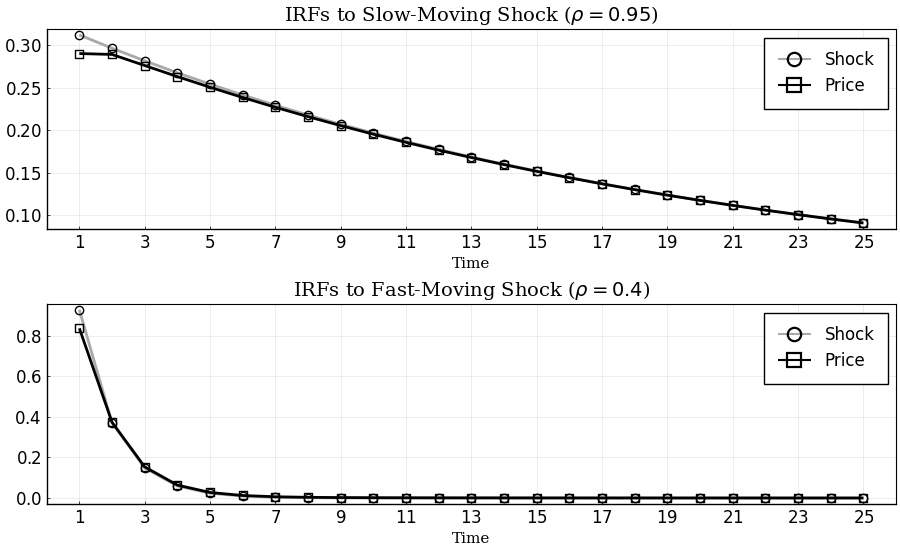
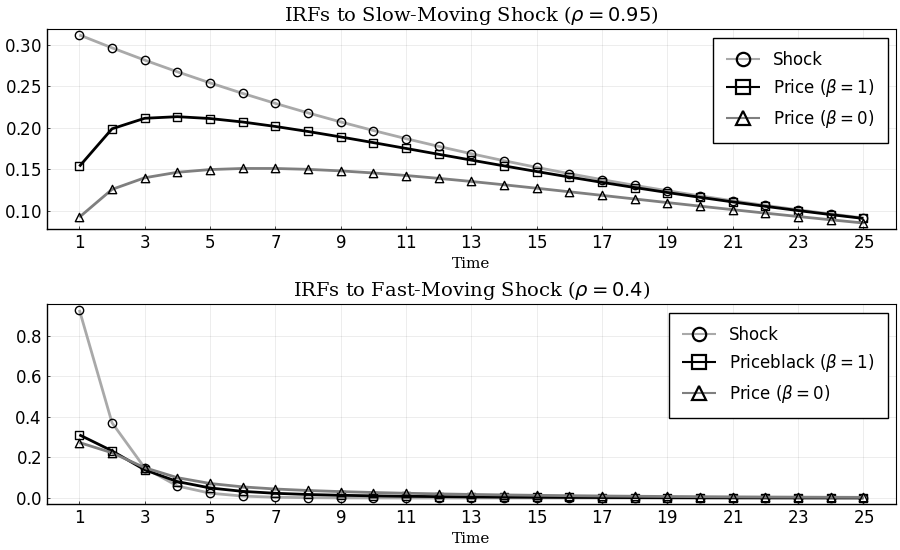
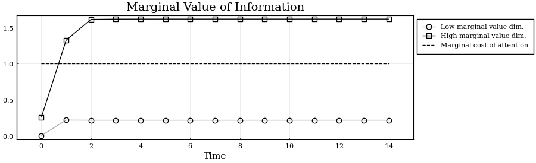
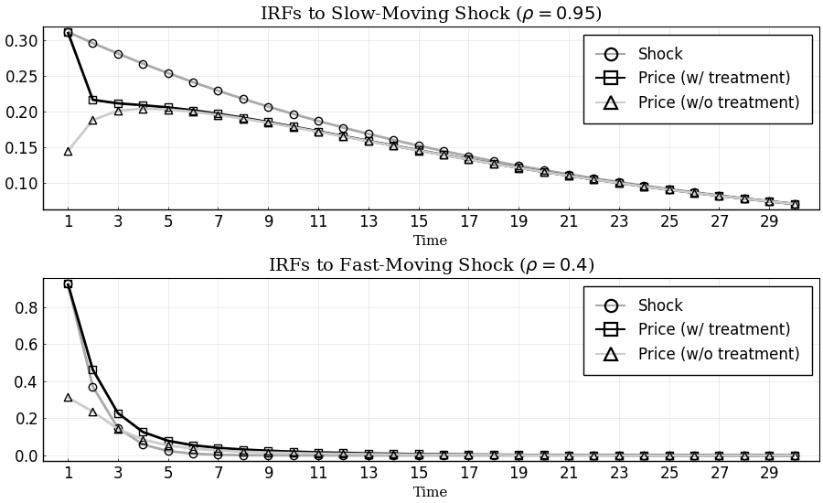

Replication of Sims (2010)
This example replicates Sims (2010) from the Handbook of Monetary Economics using the DRIPs package.
 to run and modify the following code (no software is needed on the local machine).
to run and modify the following code (no software is needed on the local machine).
See Afrouzi and Yang (2020) for background on the theory.
Contents
Setup
The problem in Sims (2011), as it appears on page 21, with slight change of notation,
where
We have renamed the parameters so that the problem directly maps to a D.R.I.P. Otherwise, the problem is the same.
Initialization
Include the package:
using DRIPs;
nothing #hideSet parameters:
β = 0.9;
ω = 1.0;
A = [0.95 0.0; 0.0 0.4];
Q = [√0.0975 0.0; 0.0 √0.86];
H = [1.0; 1.0];
nothing #hideSolution and Performance
Benchmark Parameterization
Solve and display the optimal posterior covariance matrix:
sol_bp = Drip(ω,β,A,Q,H);
sol_bp.ss.Σ_p2×2 Array{Float64,2}:
0.359213 -0.177025
-0.177025 0.794584Performance for random values of $\omega\in [0,2]$:
using BenchmarkTools;
@benchmark Drip(ω,β,A,Q,H) setup = (ω = 2*rand())BenchmarkTools.Trial:
memory estimate: 162.38 KiB
allocs estimate: 1551
--------------
minimum time: 80.321 μs (0.00% GC)
median time: 88.286 μs (0.00% GC)
mean time: 108.515 μs (17.15% GC)
maximum time: 6.428 ms (97.12% GC)
--------------
samples: 10000
evals/sample: 1Performance for random values of $\beta\in[0,1]$:
@benchmark Drip(ω,β,A,Q,H) setup = (β = rand())BenchmarkTools.Trial:
memory estimate: 162.38 KiB
allocs estimate: 1551
--------------
minimum time: 80.000 μs (0.00% GC)
median time: 97.624 μs (0.00% GC)
mean time: 118.448 μs (17.32% GC)
maximum time: 6.445 ms (97.04% GC)
--------------
samples: 10000
evals/sample: 1Lower Cost of Attention: $\omega = 0.1$
Solve and display the optimal posterior covariance matrix:
sol_lω = Drip(0.1,β,A,Q,H);
sol_lω.ss.Σ_p2×2 Array{Float64,2}:
0.319919 -0.304142
-0.304142 0.386163Different Discount Factors: $\beta \in \{0,1\}$
Solve the model for $\beta=0$ and $\beta=1$ to compare with the benchmark value of $\beta=0.9$:
$\beta = 0$
sol_lβ = Drip(ω,0,A,Q,H);
sol_lβ.ss.Σ_p2×2 Array{Float64,2}:
0.495403 -0.152171
-0.152171 0.808939$\beta = 1$:
sol_hβ = Drip(ω,1,A,Q,H);
sol_hβ.ss.Σ_p2×2 Array{Float64,2}:
0.337666 -0.178019
-0.178019 0.799701Impulse Response Functions
Benchmark Parameterization
Get the IRFs:
T = 25;
irfs_bp = irfs(sol_bp,T = T);
nothing #hidePlot IRFs:
using Plots, LaTeXStrings; pyplot();
p1 = plot(1:T, [irfs_bp.x[1,1,:], irfs_bp.a[1,1,:]],
title = L"IRFs to Slow-Moving Shock ($\rho = 0.95$)",
label = ["Shock" "Price"],
color = [:darkgray :black],
marker = [:circle :square],
markerstrokecolor = :match,
markercolor = false,
markersize = 6)
p2 = plot(1:T, [irfs_bp.x[2,2,:], irfs_bp.a[1,2,:]],
title = L"IRFs to Fast-Moving Shock ($\rho = 0.4$)",
label = ["Shock" "Price"],
color = [:darkgray :black],
marker = [:circle :square],
markerstrokecolor = :match,
markercolor = false,
markersize = 6)
p = plot(p1,p2,
layout = (2,1),
xlabel = "Time",
lw = 2,
xticks = (1:2:T),
xlim = (0,T+1),
fontfamily = "serif",
legend = :topright,
legendfont = font(12),
tickfont = font(12),
size = (900,550),
framestyle = :box)
Lower Cost of Attention: $\omega=0.1$
Get the IRFs:
T = 25; #length of IRFs
irfs_lω = irfs(sol_lω,T = T);
nothing #hidePlot IRFs:
p1 = plot(1:T, [irfs_lω.x[1,1,:], irfs_lω.a[1,1,:]],
title = L"IRFs to Slow-Moving Shock ($\rho = 0.95$)",
label = ["Shock" "Price"],
color = [:darkgray :black],
marker = [:circle :square],
markerstrokecolor = :match,
markercolor = false,
markersize = 6)
p2 = plot(1:T, [irfs_lω.x[2,2,:], irfs_lω.a[1,2,:]],
title = L"IRFs to Fast-Moving Shock ($\rho = 0.4$)",
label = ["Shock" "Price"],
color = [:darkgray :black],
marker = [:circle :square],
markerstrokecolor = :match,
markercolor = false,
markersize = 6)
p = plot(p1,p2,
layout = (2,1),
xlabel = "Time",
lw = 2,
xticks = (1:2:T),
xlim = (0,T+1),
fontfamily = "serif",
legend = :topright,
legendfont = font(12),
tickfont = font(12),
size = (900,550),
framestyle = :box)
Other Discount Factors: $\beta\in\{0,1\}$
Get the IRFs:
T = 25; #length of IRFs
irfs_lβ = irfs(sol_lβ,T = T);
irfs_hβ = irfs(sol_hβ,T = T);
nothing #hidePlot IRFs:
p1 = plot(1:T, [irfs_bp.x[1,1,:],irfs_hβ.a[1,1,:], irfs_lβ.a[1,1,:]],
title = L"IRFs to Slow-Moving Shock ($\rho = 0.95$)",
label = ["Shock" L"Price ($\beta=1$)" L"Price ($\beta=0$)"],
color = [:darkgray :black :gray50],
marker = [:circle :square :utriangle],
markerstrokecolor = :match,
markercolor = false,
markersize = 6)
p2 = plot(1:T, [irfs_bp.x[2,2,:],irfs_hβ.a[1,2,:], irfs_lβ.a[1,2,:]],
title = L"IRFs to Fast-Moving Shock ($\rho = 0.4$)",
label = ["Shock" L"Priceblack ($\beta=1$)" L"Price ($\beta=0$)"],
color = [:darkgray :black :gray50],
marker = [:circle :square :utriangle],
markerstrokecolor = :match,
markercolor = false,
markersize = 6)
p = plot(p1,p2,
layout = (2,1),
xlabel = "Time",
lw = 2,
xticks = (1:2:T),
xlim = (0,T+1),
fontfamily = "serif",
legend = :topright,
legendfont = font(12),
tickfont = font(12),
size = (900,550),
framestyle = :box)
Extensions
Transition Dynamics of Attention
In this section, we solve for the transition dynamics of the optimal posterior covariance matrix starting from an initial prior that is different from the steady state prior.
For instance let us consider a case where the firm is at the steady state of the rational inattention problem at time 0, with prior covariance matrix $\bar{\Sigma}_{-1}$, and it receives a one time treatment with a perfectly informative signal about its optimal price:
Solve for the transition dynamics
The function Trip solves for the transition dynamics automatically given the initial signal. Start by initializing the initial signal:
s0 = DRIPs.Signal(H,0.0);
nothing #hideSolve for the transition dynamics given $s_0$:
Tss = 15; # guess for time until convergence
bp_trip = Trip(sol_bp, s0; T = Tss);
nothing #hidePerformance for solving the transition dynamics for a random signal:
@benchmark Trip(sol_bp, S; T = 30) setup = (S = DRIPs.Signal(rand(2),0.0))BenchmarkTools.Trial:
memory estimate: 501.02 KiB
allocs estimate: 6200
--------------
minimum time: 487.478 μs (0.00% GC)
median time: 519.538 μs (0.00% GC)
mean time: 589.391 μs (10.83% GC)
maximum time: 7.933 ms (87.83% GC)
--------------
samples: 8470
evals/sample: 1Plot Transition Path of Eigenvalues
Plot the marginal values of information. In this problem the state is two dimensional. At any time, for every orthogonalized dimension, the agent weighs the marginal value of acquiring information in that dimension against the marginal cost of attention which is the parameter $\omega$.The number of signals that the agent acquires at any time is the number of marginal values that are larger than $\omega$.
p = plot(0:Tss-1,[bp_trip.Ds[1,1:Tss],bp_trip.Ds[2,1:Tss],bp_trip.p.ω*ones(Tss,1)],
label = ["Low marginal value dim." "High marginal value dim." "Marginal cost of attention"],
size = (900,275),
title = "Marginal Value of Information",
xlabel = "Time",
color = [:darkgray :black :black],
line = [:solid :solid :dash],
marker = [:circle :square :none],
markercolor = false,
markerstrokecolor = :match,
markersize = 6,
xlim = (-1,Tss),
xticks = 0:2:Tss-1,
legend = :outertopright,
fontfamily = "serif",
framestyle = :box)
Impulse Response Functions with Information Treatment
Get the IRFs in the transition path after treatment:
T = 30;
tirfs_bp = irfs(sol_bp,s0,T = T); # irfs with treatment
irfs_bp = irfs(sol_bp,T = T); # irfs in the Ss (without treatment)
nothing #hidePlot IRFs:
p1 = plot(1:T, [irfs_bp.x[1,1,:], tirfs_bp.a[1,1,:], irfs_bp.a[1,1,:]],
title = L"IRFs to Slow-Moving Shock ($\rho = 0.95$)",
label = ["Shock" "Price (w/ treatment)" "Price (w/o treatment)"],
color = [:darkgray :black :gray80],
marker = [:circle :square :utriangle],
markerstrokecolor = :match,
markercolor = false,
markersize = 6)
p2 = plot(1:T, [tirfs_bp.x[2,2,:], tirfs_bp.a[1,2,:], irfs_bp.a[1,2,:]],
title = L"IRFs to Fast-Moving Shock ($\rho = 0.4$)",
label = ["Shock" "Price (w/ treatment)" "Price (w/o treatment)"],
color = [:darkgray :black :gray80],
marker = [:circle :square :utriangle],
markerstrokecolor = :match,
markercolor = false,
markersize = 6)
p = plot(p1,p2,
layout = (2,1),
xlabel = "Time",
lw = 2,
xticks = (1:2:T),
xlim = (0,T+1),
fontfamily = "serif",
legend = :topright,
legendfont = font(12),
tickfont = font(12),
size = (900,550),
framestyle = :box)
This page was generated using Literate.jl.